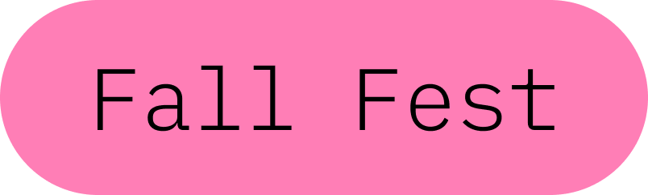
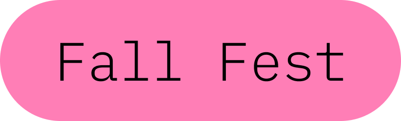

About the Event
The Qiskit Fall Fest is a global series of events that brings together the quantum community for a celebration of learning and collaboration. This year, we're celebrating a century of quantum science and innovation, and we're thrilled to bring the festivities to Dhaka, Bangladesh.
Whether you're a student, a researcher, or just curious about the future of computing, the Qiskit Fall Fest is for you. Join us for a hybrid experience of workshops, talks, and networking opportunities, both in-person at BRAC University and online.

Event Schedule
Day 1: Kick-off November 1
- Intro to Quantum Computing with IBM Quantum & Qiskit Online
- Speaker: Raghav Singla
Day 2: Quantum Frontiers Symposium
A full day of talks November 15
This hybrid event is supported by DevChangeMakers and BRAC University Electrical and Electronic Club - BUEEC.
Introduction
Sowmitra Das
The Physical Life of a Qubit
Tanvir Ahmed Masum
From Individual Atoms to Quantum Computers
Debopriyo Biswas
Quantum Algorithms for Quantum Chemistry
Shah Ishmam Mohtashim
From quantum gates to weak traces & annealers
Shushmi Chowdhury

Ask Me Anything About Quantum!
Omar Shehab
Refreshment
Enjoy the food!
Day 2: The Archives
Answering Questions from the Live Chat
 by Debopriyo Biswas
by Debopriyo Biswas
Your measurement outcome depends on the choice of basis (which is something I didn't have time to explain during the talk) but basically in my example, I chose the z-basis. Any measurement then basically projects your qubit onto the z-axis (look at the Bloch sphere picture) and so any rotations AROUND the z-axis (i.e. any change in phi, a.k.a phase) does not change the measurement outcome for the single qubit SPECIFICALLY in the z-basis. Another way to see it is if the Bloch sphere were like a globe and you measure in the z-basis, then your measurement result only depends on the latitute (theta) not longitude (phi). But be careful as different sources will swap their labels for theta and phi, so use the Bloch Sphere Wikipedia page or my slides as reference for this example. If you're curious to learn more, read up on the Stern-Gerlach experiment and follow-on experiments. Choice of basis is an important thing in quantum.
That's right.
Yes, there are big differences when it comes to the hardware technology between neutral atom, trapped ion, superconducting qubit, photonic qubit, etc technologies. Fundamentally you can build *universal quantum computers* out of any one. But how a system is built and how the gates are implemented will be different. Quite simply put, ions and neutral atoms are both atoms - but because one is charged and other is not, they are trapped in different ways and the two-qubit interactions are mediated in different ways. Ions are trapped using electric fields from electrodes on a chip, whereas neutral atoms are trapped by optical tweezers which are tightly focused laser beams. Each has effect on scalability and decoherence. But in both cases, lasers are used to perform quantum gates, which change the electronic energy state of the qubits.
Applying laser beam only affects the "electronic state" of the qubit that the laser beam shines on. We can turn on specific beams as needed to perform functions on a quantum computer.
In a trapped ion quantum computer, we first initialize all qubits to ∣0⟩, then we run the quantum circuit by playing a sequence of laser pulses that affects the qubit states. At the end, we measure by shining a *different* laser beam which collapses the qubit state to either 0 or 1. We shine this different laser beam for about 100 μs and count how many photons we collect during this duration. If the number of photons collected during the detection window is >1, we determine it's 1-state, and if it's ≤1 then we determine it's the 0-state. Then, we repeat this whole process a lot of times to collect statistics. During each run, however, we know which qubit is which and we also know very well which qubit each of the photons is coming from.
There's a fundamental paradox in building better quantum computers, which made me see this technology very differently once I realize it. A quantum computer is basically trying to build a programmable system using the rules of quantum mechanics: we want the systems to be highly controllable - and fast even - and we want them to be very accurate and clean of errors. But trying to achieve one often hurts the other. For example, trapped atomic ions can be very high accuracy if you leave them alone and don't interact with them using laser beams (photons) - and they can preserve their quantum state for years! But what good is an isolated qubit that you don't do operations on? On the other hand, a superconducting qubit has very high interactions with microwave pulses (photons) but because it interacts with its environment so strongly, it also decoheres faster. So for each technology, there is a tradeoff between fidelity and controllability; between number of qubits you can fit in a quantum processor and number of entangling gates you can run across that processor with high fidelity. Controllability vs Accuracy is a fundamental paradox in Quantum Computing that all scientists in this field have to contend with.
Meet the Speakers

Omar Shehab
Staff Research Scientist, IBM Quantum
Ask Me Anything about Quantum!
About Omar
Omar is a Staff Research Scientist at IBM Quantum in Yorktown Heights, specializing in theoretical quantum computation. Previously, he was a System Engineer and Quantum Algorithm Designer at IonQ Inc., contributing to the development of ion trap quantum computers. Shehab holds a Ph.D. in Computer Science from the University of Maryland Baltimore County and possesses expertise in quantum computing, quantum information, and related programming tools.
Raghav Singla
Application Developer, IBM
Intro to Quantum Computing with IBM Quantum & Qiskit
This talk will discuss the brief history and principles of quantum computing. We will cover how anyone can perform experiments remotely using the IBM Quantum Platform and and how to build and simulate circuits locally with Qiskit. A walkthrough of a Qiskit 101 notebook will be shared to help students get their hands dirty.
About Raghav
Raghav is an Application Developer at IBM, India, and a Qiskit Advocate who volunteers to promote quantum education. A physics fan and math lover, he is fascinated with the question that started the digital revolution: "Can machines think?"

Shah Ishmam Mohtashim
Ph.D. Student, North Carolina State University
Quantum Algorithms for Quantum Chemistry
This talk will provide a comprehensive overview of quantum computing algorithms and concepts as they are applied to the field of quantum chemistry.
About Ishmam
Ishmam is a Ph.D. student at NCSU Chemistry in the Sabre Kais Group. His current research interests include quantum simulation of a chemical and biological systems. He aims to understand nature at its most fundamental level, faster and better.
Tanvir Ahmed Masum
Ph.D. Candidate, University of Massachusetts Amherst
The Physical Life of a Qubit
Alongside fascinating talks on quantum algorithms and their applications, this session will look at the other side of the coin: the physical hardware. What is physically happening inside the machine to make a quantum computation possible? This talk aims to help demystify that process. We'll start by briefly looking at the basic physics that makes superconducting qubits work, touching on the recent experiments that won the Nobel Prize. Then, we'll take a practical look at the hardware itself, from the large dilution refrigerators to the microscopic superconducting chips inside.
The main goal is to connect the idea of a comp utation to the physical controls. We'll trace how a fundamental operation, like a 'X' gate, gets translated into a specific microwave pulse that "talks" to the qubit. We'll also discuss some of the challenges experimentalists face in the real world, and how these challenges are the reason for the noise and errors that can happen in a calculation. This talk is for anyone curious about hardware, and I hope it provides a helpful perspective on how the ideas of quantum computing and the physical hardware fit together.
About Tanvir
Tanvir is a Ph.D. candidate in the Physics Department at the University of Massachusetts Amherst, where he works in Prof. Chen Wang's lab. His research focuses on the design, fabrication, and testing of next-generation superconducting quantum hardware. He has hands-on experience with the entire experimental workflow, from chip design and nanofabrication in the cleanroom to operating the complex cryogenic systems used for qubit measurement. Tanvir holds a B.Sc. in Electrical and Electronic Engineering from BUET. He served as VC Fellow (contractual lecturer) in CSE department, BRAC University before starting his PhD.
Debopriyo Biswas
Ph.D. Candidate, Duke Quantum Center, Duke University
From Individual Atoms to Quantum Computers
Atoms and light, two of the most fundamental components of the physical world, also happen to make the most reliable quantum computers. In this presentation, Debopriyo explains how atomic ions are trapped and manipulated inside a vacuum chamber that's emptier than outer space to build the quantum processor. You will also learn how the atomic qubits are manipulated via laser beams, which are precisely controlled by classical hardware, to give a universal set of quantum gates. You will see a demo of a state-of-the-art quantum computer at Duke Quantum Center, followed by an explanation of how a quantum circuit that you submit using qiskit is translated into laser pulses that address the qubits inside.
About Debopriyo
Debopriyo is a PhD Researcher at Duke University working on trapped ion quantum computing. Advised by Prof. Chris Monroe and Prof. Crystal Noel, his research focuses on building programmable quantum machines out of lasers and atomic qubits, and harnessing them for applications in quantum gravity, chemistry, and error correction. Debopriyo is currently investigating magic-enriched signatures of gravitational backreaction in holographic error-correcting code implementations on quantum computers. Debopriyo is also a science YouTuber and educator - his fun and beginner-friendly videos explaining the latest quantum research are accessible on his eponymous YouTube channel and in the series "Quantum News Monthly". Debopriyo got his Bachelor's in Physics at Princeton University and started his PhD at the University of Maryland in College Park before moving to Duke to continue his PhD.
Shushmi Chowdhury
Ph.D. Student, University of Strathclyde
From Quantum Gates to Weak Traces and Annealers
Shushmi's interest in quantum computing began in her final year of high school, when she was selected to participate in the first cohort of the IBM-sponsored QxQ course(2020–2021). After this early exposure to quantum protocols and algorithms through Qiskit, her quantum journey took her from the bustling port city of Chittagong, Bangladesh, to the stone-lined streets of the University of Glasgow. As an undergraduate in 2022, under mentorship from Dr. Léo Bourdet at Microsoft Quantum, she explored quantum simulation of phenomena like the butterfly effect and tunnelling. Later, during her BSc project with Prof. Jörg Götte , she looked into more foundational aspects of quantum theory using the path-integral approach to study weak values in an interferometer, culminating in a prize winning final thesis. Central to this work was the time-symmetric reformulation of quantum mechanics, which characterises a quantum state using both pre- and post-selected boundary conditions, a framework more widely known as the two-state vector formalism. Going into her first-year as PhD student, she tackled advanced benchmarking of quantum annealers, which are analog quantum computers where the system evolves adiabatically to stay close to a ground state encoding solutions to problems. Looking ahead, now as a 2nd year PhD student, her project with Prof. Viv Kendon and Prof. Jonathan Pritchard aims to develop quantum approaches for tackling practical computational problems which leverage capabilities inherent to neutral-atom platforms, such as reconfigurable qubit layouts. Through these projects and continued exposure to quantum theory, computation, and experiment, she has come to realise that Physics not only deepens our understanding of the universe but also drives technological innovations. The recent Nobel Prize awarded to quantum physicists for advancements in superconducting circuits, a hallmark of the ongoing second Quantum Revolution (also termed as Quantum 2.0), is a powerful testament to this. In her talk, she will share more about her quest continuing to explore how quantum mechanics can be harnessed to solve complex problems and uncover new frontiers of understanding..
About Shushmi
Shushmi is a second-year PhD student in the Computational Nonlinear & Quantum Optics Group at the University of Strathclyde, supervised by Professors Viv Kendon and Jonathan Pritchard.
Meet the Team
Shahriyar Al Mustakim Mitul
Lead Organizer, IBM Qiskit Advocate
Nafisa Shamim Rafa
Co-organizer, IBM Qiskit Advocate
Venue & Participation
In-Person BRAC University
Merul Badda, Dhaka 1212, Bangladesh
Join us on the beautiful campus of BRAC University for our Kick-off Day!
Online Global Access
From anywhere in the world!
All sessions will be streamed. Links will be sent to registered participants.
Be Part of the Future
Quantum is for everyone. Register now to secure your spot!
RSVP